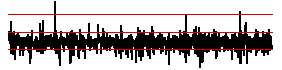
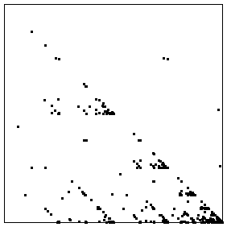
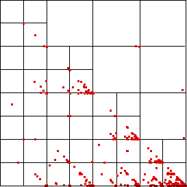

| Often we are not so interested
in the actual values, but in how much the values change from day to day. |
| So instead of of a graph of the log of the closing prices, below we plot
the graph of the differences of the logs of the closing prices. |
|  |
 |
| Difference of Logs | Driven IFS |
|
| Here is an enlarged picture, with some of the subsquares represented. |
|  |
| Noting the empty subsquares, we can make some immediate deductions. |
| * We do not observe two
consecutive differences in bin 4 (that is, two consecutive very large positive differences). |
| * A bin 4 difference is not immediately followed by a bin 3 difference, because the
subsquare with address 34 is empty. |
| * There are only a few
consecutive differences in bin 3 and in bin 1, but many in bin 2. |
| Look at the graph.
What else do you see? A moment's observation reveals some patterns not at all obvious
from the difference of logs graph. |
| * For example, note the similarities of the patterns in
the subsquare 32 and 23. How could you interpret this? |
| * The points on the diagonal in subsquare 12 (and their absence on
the diagonal in subsquare 13) shows that long strings of differences in bins 2 and 3 that
end in bin 2 can be followed by a difference in bin 1, while those strings of 2 and 3 ending
in 3 are only rarely followed by a difference in bin 1. |
| That we are dealing with only a finite data set (a bit over 1000 points
here) has an important consequence: |
| * If a subsquare is empty, does this reflect a true
causal exclusion, or is it simply a result of the shortness of the data set? |
| If we had
more points, would some land in this empty subsquare? |
| There are ways to estimate this, but
the basic observation is that the smaller the empty subsquare (hence the longer the
putatively excluded string), the less sure we are it would remain empty if we got more data. |